Our Mission
Empower communities through education support and practical initiatives that unlock opportunity.
MYDF seeks to minimize the challenges that the learners of Ridokona Day Care Center, Matsila Primary and Radzambo Secondary School face and to provide motivation for them to perform at their best, with the minimal resources available to them. We provide career guidance, information on alternate funding for further education and we also raise funds for the different needs the schools have from time to time. We also host an Awards event for our Top Achievers bi-annual. As members of the MYDF, we fund and raise funds for the initiatives we would like to implement.
Development in these areas continues to move at a snail pace and this can be attributed to the lack of capacity in many of the previously deprived communities of South Africa. Employment opportunities are non-existent and this compels many young people to migrate to other parts of the country in search of jobs. The consequence of this migration is the erosion of skills since many of the young people with potential are driven far away from their communities. Ha Matsila is also not able to attract skilled people as it has nothing to offer in terms of opportunities. There is therefore no prospect for growth and development and limited chance of social cohesiveness. One of the legacies inherited from the apartheid system is the absence of the science, technology and finance subjects in the local Radzambo Secondary School.
In its entire history the Radzambo Secondary School has never offered these subjects. Young people with an interest in these subjects are compelled to register in schools situated in other villages where these subjects are taught. Many are forced to walk about 15 Kilometers a day to schools that offer science, technology and finance. Mr Simangele Nanjee, one of the founder members of the MYDF, had to walk about 14 Kilometers to the Ramauba Secondary School at Tshikwarani village in order to do the science subjects in Grade 12. Many of the young people of Ha Matsila, the girls in particular, are trapped in this situation of limited career choices. The limitations have over the years compelled some young people to drop out of school as they became disillusioned. The lack of development at Ha Matsila and surrounding villages can also be attributed to the limitation in the number of young people with competency in the fields of science, technology, engineering and finance.
Empower communities through education support and practical initiatives that unlock opportunity.
A future where every learner can access strong pathways into science, technology and finance.
Equity, perseverance, community and excellence in everything we do.
MYDF seeks to minimize the challenges that the learners of Ridokona Day Care Center, Matsila Primary and Radzambo Secondary School face and to provide motivation for them to perform at their best, with the minimal resources available to them. We provide career guidance, information on alternate funding for further education and we also raise funds for the different needs the schools have from time to time. We also host an Awards event for our Top Achievers bi-annual. As members of the MYDF, we fund and raise funds for the initiatives we would like to implement.
Development in these areas continues to move at a snail pace and this can be attributed to the lack of capacity in many of the previously deprived communities of South Africa. Employment opportunities are non-existent and this compels many young people to migrate to other parts of the country in search of jobs. The consequence of this migration is the erosion of skills since many of the young people with potential are driven far away from their communities. Ha Matsila is also not able to attract skilled people as it has nothing to offer in terms of opportunities. There is therefore no prospect for growth and development and limited chance of social cohesiveness. One of the legacies inherited from the apartheid system is the absence of the science, technology and finance subjects in the local Radzambo Secondary School.
In its entire history the Radzambo Secondary School has never offered these subjects. Young people with an interest in these subjects are compelled to register in schools situated in other villages where these subjects are taught. Many are forced to walk about 15 Kilometers a day to schools that offer science, technology and finance. Mr Simangele Nanjee, one of the founder members of the MYDF, had to walk about 14 Kilometers to the Ramauba Secondary School at Tshikwarani village in order to do the science subjects in Grade 12. Many of the young people of Ha Matsila, the girls in particular, are trapped in this situation of limited career choices. The limitations have over the years compelled some young people to drop out of school as they became disillusioned. The lack of development at Ha Matsila and surrounding villages can also be attributed to the limitation in the number of young people with competency in the fields of science, technology, engineering and finance.
To improve the lives of our community through education by: Hosting Top Achievers Awards bi-annually Encouraging the students to attend Career expo hosted by Science-Tube Hosting motivational talks Mentorship and Coaching
Our vision is to provide an accessible and conducive learning environment that prepares young people for careers of their choice.
MYDF is a values-based organisation. Our six values define how we make decisions and treat all our stakeholders. Our values are, commitment to success We commit ourselves in ensuring that those that we care for are successful as well. Accountability, we take accountability in ensuring that we deliver our commitments. Inspiration, we create an environment where learners feel inspired through our achievements. Competence We build learners' confidence to make them able to do what they believe they cannot do. Empowerment, We empower the community/learners to make things happen rather than waiting for things to happen. Ethics and social responsibility, we demonstrate ethical behavior and social responsibility to ensure it is imparted to those we interact with.

Chairman

Chief Executive Officer

Finance Manager

Project Finance Manager

Assistant Project Finance Manager

Human Capital Manager

Assistant Human Capital Manager

Project Manager

Assistant Project Manager

Administration Manager

Assistant Administration Manager

Communications Manager

Assistant Communications Manager
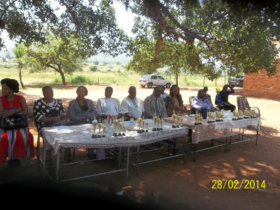
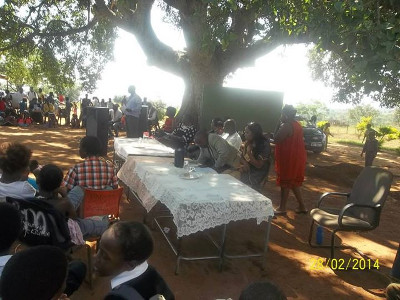
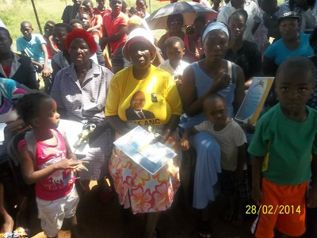
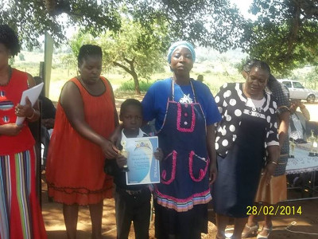
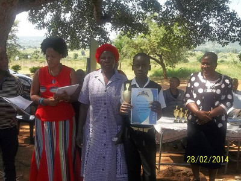
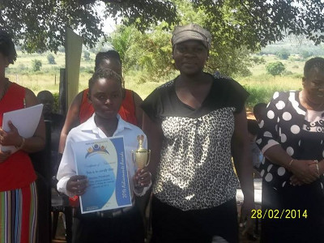
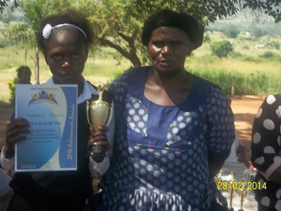
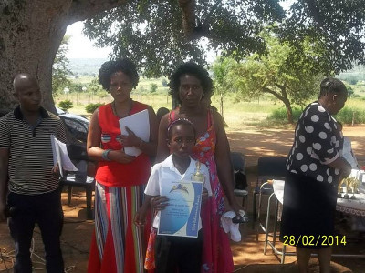
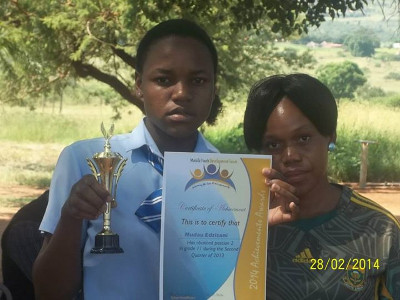
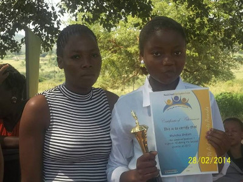
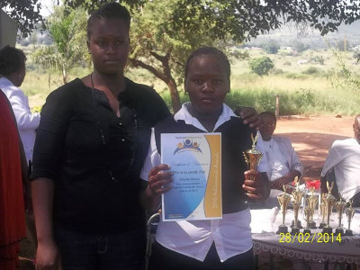
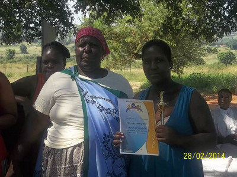
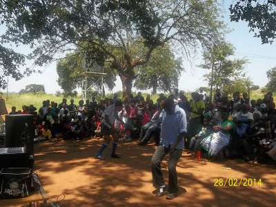
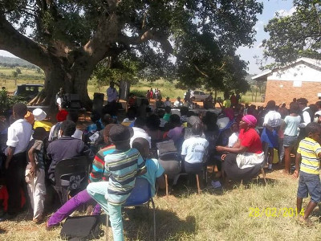
Top Achievers Awards 2013 Mid Year and Final


Matsila Primary School


Radzambo Secondary School
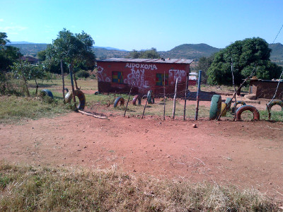
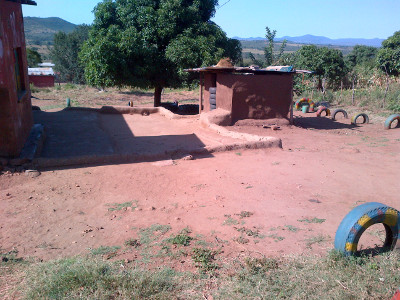
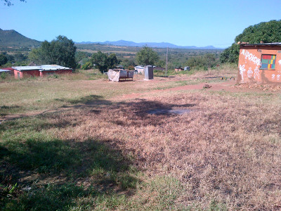
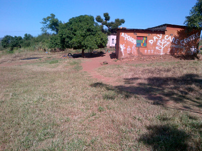
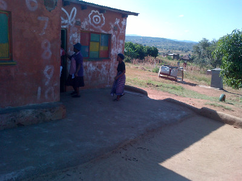
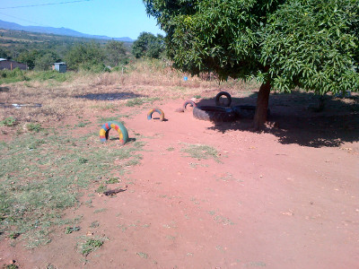
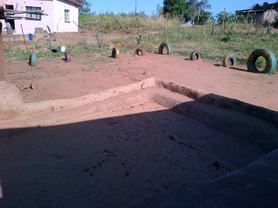
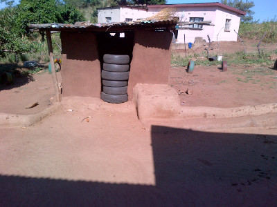
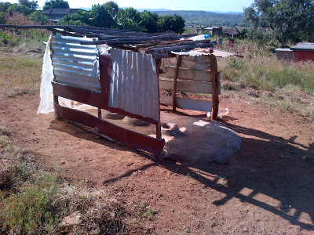
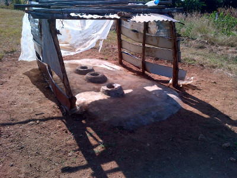
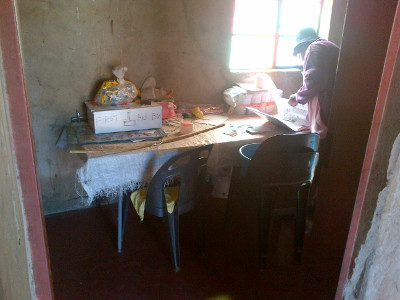
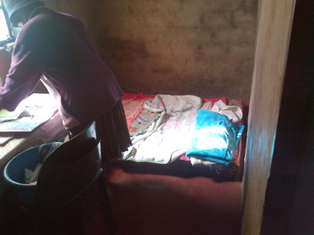
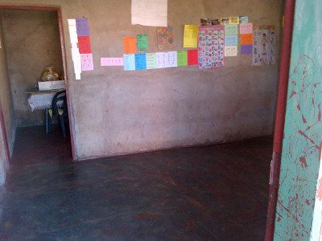
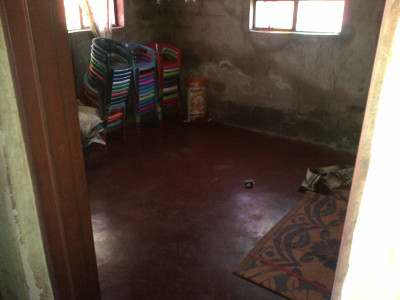
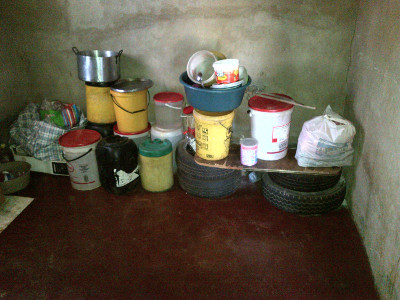
Ridokona Day Care Center
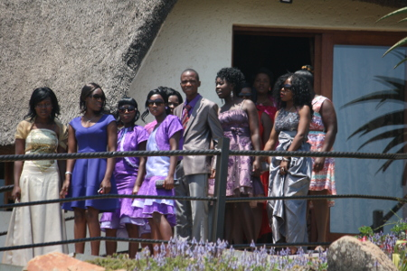
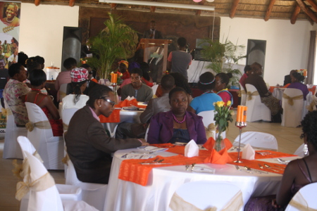
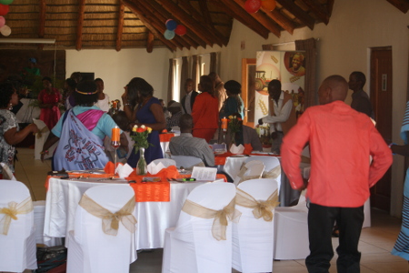
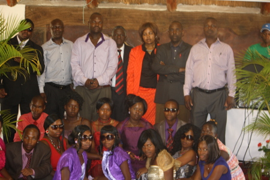
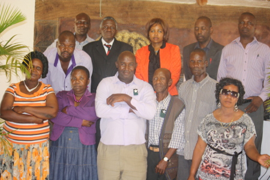
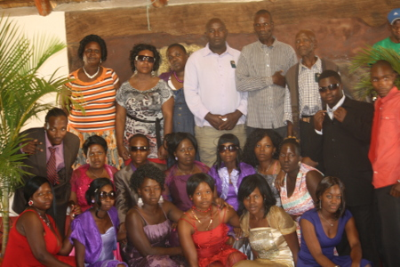
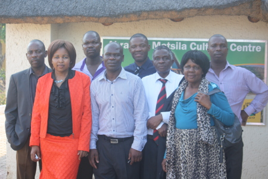
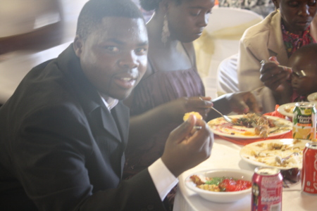
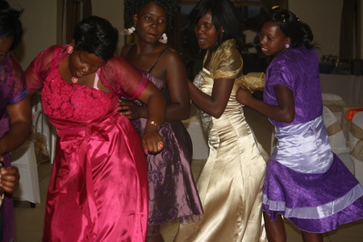
Matric Dance 2013


Nelson Mandela Day 2014


MYDF Outreach 2014


Top Achievers Awards 2014 Mid Year


Sanitation for All 2014